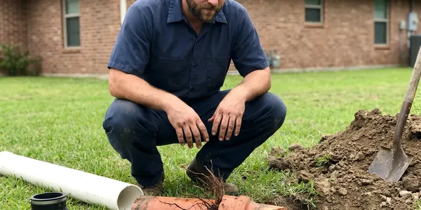

Copper Pipe Leak Repair in Wentzville, MO
Pinholes, failed solder joints and corroded fittings. FGV Plumbing repairs them daily in Wentzville, MO homes.
- Soldered and ProPress Repairs
- Type L Copper on Every Repair
- Thermal Imaging
- Licensed & Insured

Need a Copper Leak Repair Today in Wentzville, MO?
Every repair gets a pressure test before the wall or ceiling is closed.
Copper Leak Repair That Finds the Cause in Wentzville, MO
FGV Plumbing knows one copper pinhole is often a warning. The next one is rarely far off. We look at the condition of the surrounding pipe, check water pressure and inspect grounding and bonding, which gives you a clear picture of whether a spot repair will hold or whether the copper is near the end of its life. The decision is yours.
Work we handle every week:
- Pinhole, corrosion and burst line repair
- Inspection of nearby copper for thinning, pitting and green corrosion
- Section replacement for badly pitted copper

Additional Plumbing Repair Services in Wentzville, MO
We offer expert plumbing repair services across Wentzville, MO to stop leaks, clear blockages, and keep every fixture working the way it should.


Customers
Why Choose FGV Plumbing for Copper Pipe Leak Repair in Wentzville, MO?
Our trucks carry Type L copper, press fittings, lead-free solder and transition fittings to PEX. That saves a second trip. Most copper repairs in Wentzville are finished on the first visit, and anything unusual gets ordered before we leave so the return trip is set right away. We tell you the next step.
- Precise Detection, Thermal imaging pinpoints hot and cold copper leaks without opening extra drywall.
- Quality Copper, We repair with Type L copper or press fittings so the repair outlasts the pipe around it.
- Warranty, Workmanship is warrantied in writing, and the parts carry their own warranty.
Citywide Coverage
Homes on slab, homes with basements and homes on crawlspaces route copper differently. Each layout is familiar. Knowing where the lines run in your Wentzville house saves time when we look for a leak behind a finished wall.
Experienced Team
Our plumbers have soldered thousands of copper joints in attics, crawlspaces and finished walls. They work clean. A plumber who has done that much copper knows how to cut one square of drywall in the right spot, and that experience saves you money on drywall work.
Safety-First Approach
Old homes can hide lead solder, asbestos pipe wrap or mold behind walls. We look before cutting. If we find suspect material when we open a wall or ceiling, work pauses until you know what it is and how to handle it.
Trusted Certified Wentzville Plumbing Services Professionals
At FGV Plumbing, we are proud to offer certified plumbing services throughout Wentzville, MO. Those papers on the wall mean something. Our plumbers hold recognized industry credentials, and they follow strict safety and quality rules on every repair, installation and maintenance call we run.
Call Us Now PHCC Plumbing Contractor Recognition
PHCC Plumbing Contractor Recognition Better Business Bureau (BBB) Accreditation
Better Business Bureau (BBB) Accreditation Angi Certified Pro
Angi Certified Pro ISO 9001 Quality Management Certification
ISO 9001 Quality Management CertificationCopper Pipe Leak Repair Options for Wentzville, MO Homes
Preventive Copper Pipe Maintenance in Wentzville, MO
Copper gives warning signs before it leaks. They are easy to overlook. Green crust at fittings, a stain on a basement ceiling and high static pressure all point to trouble ahead, so we look over the pipe you can see and test the pressure. A pressure valve can slow it down.

Underground Copper Pipe Leak Repair in Wentzville
Buried copper service lines can leak for months before anyone notices. The meter gives it away. We locate the leak with acoustic gear and tracer gas, then repair it through a small pit or replace the line by pulling new PEX or Type K copper through the old path. Every repair gets a pressure test.
Copper Fitting and Valve Repair in Wentzville
Angle stops, shutoff valves and copper fittings under sinks and behind toilets can weep or seize. Minerals jam them. Hard water buildup inside a valve can keep it from closing when you need it most, and quarter-turn valves go in to replace the old multi-turn stops. We test each one.
Copper Pinhole Leak Repair in Wentzville
Pinholes form when the inner wall of copper pipe erodes or pits. Hot water speeds it up. They often appear in thin Type M pipe and on hot water lines where velocity and temperature are higher, which we fix by replacing that length with heavier pipe. One usually means more are coming.
Burst Copper Pipe Repair in Wentzville, MO
Copper in an exterior wall or attic can split when the water inside freezes. Hard freezes happen every winter in Missouri, and the northern part of the state usually sees longer cold spells than the south. Close the main valve. The split often does not leak until the ice thaws, so a pipe that froze overnight may start spraying the next afternoon once the house warms up. We cut out the split and solder in new pipe. Insulation goes on after.
Under Slab Copper Leak Repair in Wentzville, MO
Copper lines under a slab can wear through where they rub concrete or gravel. Warm floors are a clue. We isolate hot and cold lines with pressure tests and locate the leak with acoustic and thermal equipment, then choose between a small slab cut at the leak and rerouting the line through the walls or attic. Both options get a price.
Split Copper Line Repair in Wentzville, MO
A copper line can split from a freeze, a settling foundation or a hit from a nail. Splits leak hard. Our plumber isolates the water source, cuts out the split and solders in new pipe, then looks for any other section that may have been stressed by the same freeze or movement. Insulation goes on exposed runs.

Copper Slab Leak Repair in Wentzville
Many slab homes have copper water lines running under the concrete. Sometimes you hear it. When those lines leak, you may notice warm spots on the floor, the sound of running water or a meter that turns with every fixture off, so we find it electronically first and then quote a slab repair or a reroute. We price each option.
Nearby Copper Leak Repair in Wentzville, MO
Local matters on copper work because water chemistry varies from one area to the next. Some water is harder on copper. We know which parts of town see the most pinhole leaks, and that shortens the search when your pipe starts leaking.
Most copper repairs in Wentzville are scheduled within a day. Leaks move up the list. Phone (816) 330-2338 with where the water is showing up, and we will help you find the main valve while the truck is on its way.
FGV Plumbing at a Glance
- Fully licensed plumbing team covering Wentzville, MO
- Same-day appointments and 24/7 emergency response
- Clear written estimates, no hidden fees
- 4.9-star rated by 307+ Missouri customers
Wentzville Map
Wentzville Information
- Population
- 47,497
- Area codes
- Local
- Service area
- Wentzville and communities within 40 miles
- Nearby
- O'Fallon, St. Peters, St. Charles, Chesterfield
Cold snaps and settling foundations both stress copper supply lines in Wentzville, MO homes, so a small leak deserves a quick repair. Hard freezes happen every winter in Missouri, and the northern part of the state usually sees longer cold spells than the south.
Talk to a Plumber
Call FGV Plumbing for reliable plumbing work done by licensed pros in Wentzville, MO.
Our Specialized Plumbing Services in Wentzville, MO
At FGV Plumbing, you get every kind of plumbing service from one company across Wentzville, MO. We go from leak detection all the way to full system installations, for homes and commercial buildings, and we do it quickly at a fair price. Here are the core services we offer:


From Locating to Pressure Test in Wentzville, MO
Here is how a copper leak repair runs from your call to the final pressure test.
Tell Us What You See
Call (816) 330-2338 and describe the water, stains or dripping. We will get someone out quickly.
Pinpoint the Leak
We locate the leak with thermal imaging and moisture meters with minimal openings. Then you get a price.
Repair and Inspect
We replace the damaged copper and pressure test the line. We check the pipe nearby too.
Frequently Asked Questions About Copper Pipe Leak Repair in Wentzville
A simple solder repair usually runs $200 to $500. Access adds cost. A slab leak that needs specialized detection and repair could range from $800 to $3,000 or more, with reroutes at the top of that range. We price it once we know the cause.
Clamps and epoxy putty can stop a drip for a day. They will not last. A proper repair means cutting out the thin copper and soldering or pressing in new pipe, since a failed patch at full pressure can soak a floor in minutes. Treat it as a stopgap.
Water chemistry is a big factor. Homes around Wentzville on private wells should test for hardness and bacteria before picking a treatment system. High pressure plays a role. Water that is too acidic or too alkaline, aggressive soil around buried pipe, high pressure, poor installation and foundation movement can all thin copper or stress joints until they leak. It is usually a combination.
Start with water stains on walls and ceilings. Look under sinks next. Green or blue corrosion on fittings, musty odors, a higher bill and the sound of dripping inside walls all point to a copper leak, and low pressure at one fixture can mean a leak on that branch. A visit settles it.
We work with Type K, L and M copper from all standard manufacturers. Each meets ASTM specs. We repair whatever is already in your walls, and we tie new copper or PEX into it with fittings rated for the pipe size and the transition. Type L is our usual repair pipe.
Most accessible repairs take one to two hours. Hidden leaks run longer. Leaks inside walls or ceilings can take two to four hours, and slab leak repairs may take a full day depending on whether the line is repaired in place or rerouted. You hear the schedule up front.
Minor repairs typically do not. Larger work often does. Significant repiping, relocating lines or work on the main water service in Wentzville may need a plumbing permit, depending on the scope and how the city defines the work. The paperwork is on us.
If you have had repeated leaks, it is worth pricing. PEX resists that corrosion. PEX resists the corrosion and scale that cause copper pinholes and goes in quickly with fewer wall openings, so a PEX repipe often beats years of patching. We price both options.
What People Are Saying About Our Plumbing Experts?

Monica A.
Our water bill nearly doubled in one month with no change in how we used water. The tech checked the meter, heard the leak under the hallway with his equipment, and opened a hole about a foot square. Fixed the same day.
Slab Leak Repair · St. Charles, MOSofia M.
Two new toilets went in during one visit. The tech set them on new wax rings and swapped the old supply lines. He also noticed our bathroom faucet dripping and replaced the cartridge while he was there. No mess left behind.
Toilet Installation · Chesterfield, MO
Diane F.
My kitchen faucet had dripped for months and I finally got tired of hearing it at night. FGV Plumbing came out the next morning, replaced the cartridge and the O rings, and tightened a loose base that was letting water under the sink.
Faucet Repair · Wentzville, MO
Greg S.
I manage a small strip center with six tenants. FGV Plumbing handles our annual backflow testing and fixed a recurring clog in the shared sewer line that had been backing into the nail salon. Their reports come in clean and on time.
Commercial Plumbing · Ballwin, MOPatricia H.
We had a slab leak that two other companies could not find. FGV Plumbing located it in under an hour with a listening device. They rerouted the line through the attic instead of breaking up the floor, so we kept our kitchen tile.
Slab Leak Repair · St. Peters, MO
Lisa C.
Water was pouring out from under the washing machine on a holiday weekend. FGV Plumbing talked me through closing the valves over the phone and had a plumber at the house within ninety minutes. It was a burst fill hose.
Emergency Plumbing · Wildwood, MO